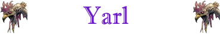

Maestria nella Carica;

|
|
Ambiente/Habitat | Paludi |
| Frequenza | Rare | |
| Organizzazione | Solitary | |
| Periodo di Attività | Giorno | |
| Dieta | Erbivoro | |
| Intelligenza | Semi-Intelligent (4) | |
| Punti Combattimento | Nessuno | |
| Tesoro | Nessuno | |
| Allineamento Dominante | Neutrale | |
| Numero di Apparizione | 1 | |
| Classe Armatura | 5 [10 base, -2 corazza, -3 destrezza] | |
| Movimento | 10 esagoni | |
| Dadi Vita | 6 | |
| Thac0 | 15 | |
| Numero di Attacchi | Corna | |
| Danni | 2d6 (Punta) | |
| Poteri Offensivi | Carica Migliorata; Maestria nella Carica; |
|
| Poteri Difensivi | Distorsione Migliorata; | |
| Poteri Generici | Camminata Acquatica; | |
| Vulnerabilità | Nessuna; | |
| Resistenza alla Magia | 20% | |
| Sensi | Vista Comune; Sensi Superiori; | |
| Dimensioni | Large (3 m. lunghezza) | |
| Morale | Steady (12) | |
| Valore in Punti Esperienza | 980 |
| MODIFICATORI AI TIRI SALVEZZA | |||||||||||||||||||||||
| COR | -5 | 50 | ENV | 0 | 50 | MAG | +10 | 49 | MAL | 0 | 44 | MEN | 0 | 57 | RIF | +5 | 48 | ROB | 0 | 47 | VEL | 0 | 41 |
Descrizione
Il corpo di questa creatura è lungo circa tre metri ed è ricoperto da una pelle dura ma nello stesso tempo elastica dal colore marrone scuro con strisce verticali chiare. Il corpo è caratterizzato da lunghe gambe posteriori alle quali fanno da contro le gambe anteriori più piccole ma ugualmente robuste. Il collo è allungato è sormontato da una grande testa di cervo con grandi corna molto ramificate. Il corpo termina con una lunga e robusta coda che misura oltre un metro.
Combat
Grazie al differenza di altezza delle sue gambe, lo Yarl utilizza le lunghe leve posteriori per produrre dei rapidissimi e brevi scatti che permettono di imprimere una forza spaventosa alle sue cariche. Colpisce violentemente con le corna le sue vittime perforandone le carni. Una volta giunto in corpo a corpo sfrutta la sua naturale capacità del suo manto di riflettere la luce e le ombre per distorcere l'immagine proiettata dal suo corpo rendendosi così difficile da colpire.
CARICA
MIGLIORATA
(Least Special Ability):
Il corpo di questa creatura, particolarmente adatto alla corsa, rende più facile
alla stessa di caricare. Per tale motivo la creatura riceve costantemente un
bonus di +2 al tiro
per determinare il successo di una manovra di carica.
MAESTRIA NELLA
CARICA
(Lesser Special Ability):
La creatura è particolarmente abile nell'effettuare manovre di carica. Per
questo motivo, la stessa
potrà godere dei benefici della manovra di
carica (bonus di +1 al tiro per
colpire e +2 ai danni che si considera dovuto alla forza dell'attaccante)
anche qualora effettui tale manovra nei
confronti di un avversario che si trovi già in melee
(questo beneficio non si applica contro gli avversari che risultano parzialmente
coperti da ostacoli fisici, cd. partial cover).
DISTORSIONE MODERATA (Superior Special Ability): Questa creatura è in grado di distorcere la luce intorno a se stessa in modo tale da apparire leggermente distante rispetto alla sua posizione reale. Per tale motivo, la creatura, apparendo costantemente in una posizione leggermente diversa da quella realmente occupata, risulterà più difficile da colpire. Ogni attacco, sia in corpo a corpo che a distanza, rivolto direttamente contro la stessa, infatti, avrà 25% di fallire andando a vuoto. Parimenti il lancio di incantesimi che prevedano come effetto quello di scagliare elementi od oggetti direttamente contro la creatura avranno il 25% di possibilità di fallire; in questo caso il tiro percentuale va effettuato prima di ogni eventuale tiro per colpire e ripetuto per ogni singolo oggetto scagliato (si pensi alla magia Magic Missile la quale richiederà un tiro percentuale per ogni dardo lanciato sulla creatura). Non si applicherà, invece, questo beneficio nei confronti di tutti gli incantesimi che, nonostante abbiano la creatura come proprio bersaglio diretto, non prevedano di colpirla con oggetti od elementi (si pensi alle magie mentali, a molte magie della scuola necromancy ed illusion nonché alle magie clericali quali, ad esempio, Bestow Curse e Toxic Cloud). Questo beneficio non si applicherà, inoltre, a tutti gli effetti ed alle magie ad area in cui la creatura si trovi coinvolta. Si noti che, nonostante non si tratti di un'illusione, dipendendo l'incantesimo dalla rifrazione della luce, le creature accecate e quelle che non utilizzano una normale vista per individuare la creatura (come ad esempio le creature dotate di infravisione, vista abissale, senso totale e senso del tremore) non subiscono alcun effetto da questo incantesimo. Per il medesimo motivo, in zone di buio totale, questo potere speciale non avrà alcun effetto. Si noti che una magia di True Seeing rileverà la posizione reale della creatura annullando totalmente l'effetto di questa abilità.
CAMMINATA ACQUATICA (Lesser Special Ability): Questa creatura è in grado di spostarsi camminando con il corpo parzialmente immerso nell'acqua riducendo di una classe la penalità al movimento che le sarebbe normalmente applicata. Si noti che quest'abilità non riduce l'eventuale penalità al combattimento prevista per il corpo parzialmente immerso nell'acqua.
LESSER COMBO - MAESTRIA NELLA CARICA e CARICA MIGLIORATA - Le due abilità costituiscono una combo in quanto la seconda incide in via diretta sull'utilizzo della prima. In considerazione che, in ogni caso, la possibilità di utilizzo delle due abilità nel corso di un combattimento, è assai limitata, la combo può considerarsi minore.
Habitat/Society
Lo Yarl è solito abitare le zone palustri ed umide del Nord Arelia. Grazie al suo manto può resistere alle rigide temperature dell'inverno areliano, durante il quale per buona parte passa in letargo dentro anfratti e caverne. I suoi periodi di maggiore attività sono, infatti, le altre stagioni durante le quali solitamente si accoppia con le femmine della sua specie. Essendo una creatura di origine magica ed alquanto rara non sono conosciute in modo preciso le sue abitudini. Soprattutto non sono ben chiari i motivi precisi per i quali talvolta, invece di darsi alla fuga, si getta in combattimento contro creature che sono almeno in apparenza più grandi e forti di lui.
Ecology
Le origini dello Yarl si perdono nei miti e nelle leggende dei popoli barbari del Nordor. Lo Yarl è una creatura erbivora, che difficilmente attacca altri animali o esseri senzienti evoluti, a meno che questi non lo minaccino od invadano il suo territorio. Un buono skinner può recuperare dalla carcassa di uno Yarl una pelle. La delicatezza di tale tessuto impone allo skinner una penalità di -1 alla relativa prova. Il valore della pelle adeguatamente ripulita e tagliata è di circa 300 - 400 monete d'oro. Questa pelle può essere utilizzata in fase di creazione di oggetti magici incantati con incantamenti del tipo "displacement" conferendo un bonus di +5% al tiro per determinare se il processo di incantamento è avvenuto con successo.
Mystical Resource Sourge
(Corna) Quantità: 1, Presenza 50%
- Scuola di Magia :
Enchatment
- Qualità
della Risorsa: Common.
Mystical Resource Sourge
(Coda) Quantità: 1, Presenza 33% - Scuola di Magia:
Alteration
- Qualità della Risorsa: Uncommon.